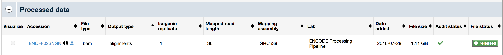
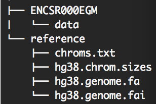

CLI Tutorial¶
1. Experimental dataset¶
For this tutorial we’ll use experimental CHIP-seq data. The particular dataset we have chosen has the transcription factor CTCF as the assay target and was obtained from the K562 cell line. The dataset is available on the ENCODE data portal here ENCSR000EGM
Download the .bam files for the two replicates shown below in the image.

The two replicates are isogenic replicates (biological). A more detailed explanation of the various types of replicates can be found here.
Links to the replicate bam files provided below.
wget https://www.encodeproject.org/files/ENCFF198CVB/@@download/ENCFF198CVB.bam -O rep1.bam
wget https://www.encodeproject.org/files/ENCFF488CXC/@@download/ENCFF488CXC.bam -O rep2.bam
Now download the control for the experiment, which is available here ENCSR000EHI
Download the bam file shown in the image below.
Link provided below
wget https://www.encodeproject.org/files/ENCFF023NGN/@@download/ENCFF023NGN.bam -O control.bam
1.1 Preprocessing steps to generate bigwig counts tracks¶
For the following steps you will need samtools bamtools and bedGraphToBigWig, which are not installed as part of this repository.
Here are some links to help install those tools.
bedGraphToBigWig (Linux 64-bit)
bedGraphToBigWig (Mac OSX 10.14.6)
1.1.1 Merge the two replicates and create and index¶
samtools merge -f merged.bam rep1.bam rep2.bam
samtools index merged.bam
1.1.2 Create bigwig files using bedtools via intermediate bedGraph files¶
Experiment
# get coverage of 5’ positions of the plus strand
bedtools genomecov -5 -bg -strand + \
-g hg38.chrom.sizes -ibam merged.bam \
| sort -k1,1 -k2,2n > plus.bedGraph
# get coverage of 5’ positions of the minus strand
bedtools genomecov -5 -bg -strand - \
-g hg38.chrom.sizes -ibam merged.bam \
| sort -k1,1 -k2,2n > minus.bedGraph
# Convert bedGraph files to bigWig files
bedGraphToBigWig plus.bedGraph hg38.chrom.sizes plus.bw
bedGraphToBigWig minus.bedGraph hg38.chrom.sizes minus.bw
Control
# get coverage of 5’ positions of the plus strand
bedtools genomecov -5 -bg -strand + \
-g hg38.chrom.sizes -ibam control.bam \
| sort -k1,1 -k2,2n > control_plus.bedGraph
bedtools genomecov -5 -bg -strand - \
-g hg38.chrom.sizes -ibam control.bam \
| sort -k1,1 -k2,2n > control_minus.bedGraph
# Convert bedGraph files to bigWig files
bedGraphToBigWig control_plus.bedGraph hg38.chrom.sizes control_plus.bw
bedGraphToBigWig control_minus.bedGraph hg38.chrom.sizes control_minus.bw
1.2 Identify peaks¶
For the purposes of this tutorial we will use the optimal IDR thresholded peaks that are already available in the ENCODE data portal. We will use the the narrowPeak files that are in BED6+4 format. Explanation of what each of the 10 fields means can be found here. Currently, only this format is supported but in the future support for more formats will be added.
See image below that shows the file listed in the ENCODE data portal

Link to download the file ENCFF396BZQ
1.3 Organize you data¶
We suggest creating a directory structure to store the data, models, predictions, metrics, importance scores, discovered motifs, plots & visualizations etc. that will make it easier for you to organize and maintain your work. Let’s start by creating a parent directory for the experiment and moving the bigwig files and peaks file from section 1.1 & 1.2 to a data directory
mkdir ENCSR000EGM
mkdir ENCSR000EGM/data
mv *.bw ENCSR000EGM/data
mv peaks.bed ENCSR000EGM/data
Once this is done, your directory heirarchy should resemble this

Note: The data organization that is suggested here is not a requirement!
1.4 Reference genome¶
For the sake of this tutorial let’s assume we have a reference directory at the same level as the ENCSR000EGM experiment directory. In the reference directory we will place 4 files the hg38 fasta file, the index to the fasta file, chromosome sizes file and one text file that contains a list of chromosomes we care about (one per line - chr1-22, X, Y, M and exclude the rest). The directory structure looks like this.
2. Train a model!¶
Before we start training, we need to compile a json file that contains information about the input data. Here is a sample json file that shows how to specify the input data information for the data we organized in Section 1.3. The data is organized into tracks. In this example we have two tracks, the plus and the minus strand. Each track has 4 required keys strand, task_id, signal, & peaks and one optional key control, which can be specified if control data is available. Notice how the task_id remains the same for the two tracks. We use the same task_id for the plus & minus pairs of the same experiment, and use strand to disinguish between the two, 0 for plus strand and 1 for the minus strand.
{
"task0_plus": {"strand": 0,
"task_id": 0,
"signal": "/users/john/ENCSR000EGM/data/plus.bw",
"control": "/users/john/ENCSR000EGM/data/control_plus.bw",
"peaks": "/users/john/ENCSR000EGM/data/peaks.bed"},
"task0_minus": {"strand": 1,
"task_id": 0,
"signal": "/users/john/ENCSR000EGM/data/minus.bw",
"control": "/users/john/ENCSR000EGM/data/control_minus.bw",
"peaks": "/users/john/ENCSR000EGM/data/peaks.bed"}
}
Now that we have our data prepped, we can train our first model!!
The command to train a model is called train.
You can kick start the training process by executing this command in your shell
BASE_DIR=~/ENCSR000EGM
DATA_DIR=$BASE_DIR/data
MODEL_DIR=$BASE_DIR/models
REFERENCE_DIR=~/reference
CHROM_SIZES=$REFERENCE_DIR/hg38.chrom.sizes
REFERENCE_GENOME=$REFERENCE_DIR/hg38.genome.fa
CV_SPLITS=$BASE_DIR/splits.json
INPUT_DATA=$BASE_DIR/input_data.json
mkdir $MODEL_DIR
train \
--input-data $INPUT_DATA \
--stranded \
--has-control \
--output-dir $MODEL_DIR \
--reference-genome $REFERENCE_GENOME \
--chroms $(paste -s -d ' ' $reference_dir/hg38_chroms.txt) \
--chrom-sizes $CHROM_SIZES \
--splits $CV_SPLITS \
--model-arch-name BPNet1000d8 \
--sequence-generator-name BPNet \
--model-output-filename model \
--input-seq-len 2114 \
--output-len 1000 \
--filters 64 \
--shuffle \
--threads 10 \
--epochs 100 \
--learning-rate 0.004
The splits.json file contains information about the chromosomes that are used for validation and test. Here is a sample that contains one split.
{
"0": {
"val": ["chr10", "chr8"],
"test": ["chr1"]
}
}
Note: It might take a few minutes for the training to begin once the above command has been issued, be patient and you should see the training eventually start. For this experiment the training should complete in about an hour or atmost 2 hours depending on the GPU you are using.
3. Predict on test set¶
Once the training is complete we can generate prediction on the test chromosome.
PREDICTIONS_DIR=$BASE_DIR/predictions
mkdir $PREDICTIONS_DIR
predict \
--model $(ls ${MODEL_DIR}/***INSERT-DIRECTORY-NAME-HERE***/*.h5) \
--chrom-sizes $CHROM_SIZES \
--chroms chr1 \
--reference-genome $REFERENCE_GENOME \
--exponentiate-counts \
--output-dir $PREDICTIONS_DIR \
--input-data $INPUT_DATA \
--predict-peaks \
--write-buffer-size 2000 \
--batch-size 1 \
--has-control \
--stranded \
--input-seq-len 2114 \
--output-len 1000 \
--output-window-size 1000
4. Compute metrics¶
To compute metrics first compute the min max bounds for each peak individually, and on both the plus and minus strands. This can be done by a single command as follows:
BOUNDS_DIR=$BASE_DIR/bounds
mkdir $METRICS_DIR
bounds \
--input-profiles $DATA_DIR/plus.bw $DATA_DIR/minus.bw \
--output-names task0_plus task0_minus \
--output-directory $BOUNDS_DIR \
--peaks $DATA_DIR/peaks.bed \
--chroms chr1
Now compute metrics on the plus and minus strand separately using the following command
METRICS_DIR=$BASE_DIR/metrics
mkdir $METRICS_DIR
metrics \
-A [path to profile training bigwig] \
-B [path to profile predictions bigwig] \
--peaks $DATA_DIR/peaks.bed \
--chroms chr1 \
--output-dir $METRICS_DIR \
--apply-softmax-to-profileB \
--countsB [path to exponentiated counts predictions bigWig] \
--chrom-sizes $CHROM_SIZES
5. Compute importance scores¶
SHAP_DIR=$BASE_DIR/shap
mkdir $SHAP_DIR
shap_scores \
--reference-genome $REFERENCE_GENOME \
--model $(ls ${MODEL_DIR}/***INSERT-DIRECTORY-NAME-HERE***/*.h5) \
--bed-file $DATA_DIR/peaks.bed \
--chroms chr1 \
--output-dir $SHAP_DIR \
--input-seq-len 2114 \
--control-len 1000 \
--control-smoothing 7.0 81 \
--task-id 0 \
--control-info $INPUT_DATA
6. Discover motifs with TF-modisco¶
MODISCO_PROFILE_DIR=$BASE_DIR/modisco_profile
mkdir $MODISCO_PROFILE_DIR
motif_discovery \
---scores-path $INTERPRET_DIR/<path to profile scores file> \
--output-directory $MODISCO_PROFILE_DIR
MODISCO_COUNTS_DIR=$BASE_DIR/modisco_counts
mkdir $MODISCO_COUNTS_DIR
motif_discovery \
---scores-path $INTERPRET_DIR/<path to counts scores file> \
--output-directory $MODISCO_COUNTS_DIR